Resultados del Benchmarking con proteinas Spike-In
Author
Carlota de la Concepción Ruiz
Diseño de muestra
La muestra de referencia contiene proteínas humanas, bacterianas (E.coli) y de levadura (S.cerevisiae). De la muestra A a la D, las proteínas de E.coli aumentan y las de S.cerevisiae disminuyen hasta desaparecer (Table 1). La muestra D representa así una situación de presencia-ausencia, con un alto porcentaje de NAs que permite evaluar el tratamiento de los valores ausentes, el objetivo principal del paquete.
Table 1: Composición de las muestras experimentales.
Muestra
H. sapiens
E. coli
S. cerevisiae
A
80%
5%
15%
B
80%
10%
10%
C
80%
15%
5%
D
80%
20%
0%
La muestra se ha preparado extrayendo las proteinas de kits comerciales. Las proteínas humanas se han extraído de células de HeLa-CCL 2 (ATCC™), proteínas E.coli Strain HB101 K-12 (BioRad) y proteínas de S.cerevisiae (Promega). Se obtuvo el conjunto de proteínas a partir del mismo batch. Posteriormente, el tratamiento de las proteínas se realizó de manera independiente. Además, a la hora de aislar las proteínas, se distribuyeron de tal manera que el aislamiento de estas no fuera dependiente de la muestra, sino que, en cada fila, había muestras de distinto tipo. De esta manera se han generado 4 pseudo-replicas biológicas para cada condición.
Generación de datos mediante nanoLC-MS/MS y tratamiento con Spectronaut
Adquisición de datos
Los datos se adquirieron mediante espectrometría de masas con adquisición independiente de datos (DIA, Data-Independent Acquisition). En esta estrategia la fragmentación no depende de lo observado en el espectro MS1, por lo que no se seleccionan únicamente los precursores más intensos. Todo el rango de m/z se recorre de forma sistemática mediante ventanas de aislamiento, de anchura variable según la complejidad y la abundancia de cada zona del espectro. Se fragmentan todos los precursores contenidos en cada una. Los espectros resultantes son mezclas de péptidos que se deconvolucionan después, mediante librerías espectrales, en el software de análisis. De este modo, los péptidos poco abundantes se detectan con mayor frecuencia, lo que genera menos valores ausentes y una cuantificación más reproducible entre runs.
Análisis de los datos con el programa comercial Spectronaut
La inferencia de proteínas se llevó a cabo con el software comercial Spectronaut (versión 20.5). Para la inferencia se seleccionaron los proteomas revisados de Swiss-Prot de UniProt y se indicaron las condiciones en las que se había llevado a cabo la generación de las muestras. Así, tras 3 filtros de FDR, a nivel de espectro, de péptico y de proteína, se obtienen datos con alta potencia estadística, concretamente, se obtuvieron 156.800 grupos proteicos que fueron analizados estadísticamente.
Dada la presencia de péptidos compartidos, si un péptido se asocia a una proteína de humano y de levadura, en el caso de la muestra D, la abundancia de esa proteína de levadura aparecerá como valor cuando debería ser un NA ya que no se han añadido proteínas de levadura en la preparación de la muestra. Esto puede dar lugar a falsos negativos por mostrar abundancias similares en las comparaciones D-C donde las diferencias no son muy notorias.
Análisis estadísitico comparativo de datos con proteínas spike-in
Los datos generados con Spectronaut se cargaron en R y se procesaron con la función preprocess_spectronaut(), que elimina los grupos proteicos con abundancia nula en todas las muestras y sustituye los ceros restantes por NAs.
A continuación, se aplica la transformación logarítmica en base 2, que reduce el rango de las abundancias, estabiliza la varianza, acerca los datos a una distribución normal y facilita la interpretación del fold-change. Ya que un +1 indica que a la abundancia de una proteina en cierta comparación se duplica y por el contrario, un -1, que la abundancia es la mitad. Esta transformación se hace para cada abundancia de manera individual.
Aunque se realiza como primer paso, algunos métodos de normalización parten de los datos transformados y otros de los crudos. Después se normalizan los datos para que las cuantificaciones entre muestras sean comparables, ya que el espectrómetro devuelve abundancias que dependen de la cantidad total de proteína cargada, de los errores volumétricos y de la sensibilidad del cromatógrafo. Finalmente se imputan los valores ausentes según su causa, lo que permite aplicar la prueba estadística con limma o limpa sin perder grupos proteicos.
Para seleccionar el método de normalización, NADIA combina las métricas de PRONE (PCV, PMAD, PEV y correlación intragrupo), que evalúan la similitud de las abundancias dentro de un grupo, con una métrica de separación que mide cuánto difieren las abundancias entre condiciones. Para seleccionar el método de imputación se emplean las métricas de NAguideR, que generan un subconjunto de datos completos, introducen NAs aleatorios, imputan con cada método y comparan los valores imputados con los reales. Como estas métricas solo evalúan los métodos típicos de MAR, la función imputation_metrics sirve para elegir el método MAR pero no el MNAR, que requiere un análisis comparativo posterior. Cuando se cuenta con proteínas spike-in o se conoce el resultado, ese análisis se realiza con benchmarking_proteomics, que permite evaluar de forma simultánea distintos métodos de normalización e imputación una vez indicadas en process_proteomics las comparaciones que se desean analizar. El análisis devuelve el número de verdaderos positivos (TP), verdaderos negativos (TN), falsos positivos (FP) y falsos negativos (FN), de modo que se selecciona la combinación con más TP y menos FP. Un método híbrido, que impute según la naturaleza de cada NA, es preferible a uno único, porque imputar lo mismo en todos los casos elevaría el número de resultados falsos.
Dado que NADIA cuenta con 12 métodos de normalización, se van a evaluar las diferentes opciones según las métricas seleccionadas por el desarrollador con el objetivo de seleccionar la mejor para nuestros datos. Algunos de estos métodos de normalizacion son GlobalMedian, GlobalMEan, eqmdeians, medianNorm, meanNorm, vsn y quantile.
Para analizar el efecto de la normalización frente a la no normalización, se debería incluir el método denominado log2Norm, que hace referencia a la no normalizacion como se indica en la guia del paquete. Esto no es posible dado que las abundancias sin normalizar no están centradas en zero por lo que la comparación no es realista (se podría realizar reajustando la centralidad de los datos a través de un volcano plot).
Obtencion de valores métricos para la selección del método de normalización
Con el objetivo de poder evaluar de manera manual cuales son los mejores métodos de normalizacion, se han desarrollado varias funciones: - La funcion nm_prepare_se extrae de los metadatos y los datos de anotacion de proteinas necesarios para generar la matriz filtrada, sustituye los ceros por NA y genera los objetos SE crudo y con los datos normalizados por log2. - La funcion normalization_metrics genera un ranking tras evaluar los diferentes métodos de normalizacion por los parámetros determinados: - Rank_PCV: Evalúa el coeficiente de variacion para cada proteina en cada concidion - Rank_PMAD - Rank_PEV: - Rank_Cor: - Rank_Sep Así genera un Rank_final con la media de todas las posiciones. Dado que en funcion del la métrica el valor optimo tiene que tomar un valor mayor o menor, se ha estabelcido que el mejor método, tomará el valor de uno (en el caso de Rank_PCV, tomará el valor de 1 el método que de el menor valor para PCV mientras que en el caso de Rank_Cor, tomará el valor de 1 el método que obtenga el mayor valor para Cor). Así, al promediar el valor final, se obtiene que el valor con Rank_final, será el más optimo dado que ha sifo el que ha obtenido menores valores para las diferentes métricas.
Table 2: Evaluación final de los métodos de normalización
Método
Rank PCV
Rank PMAD
Rank PEV
Rank Cor
Rank Sep
Rank Final
cycloess
9
1
1
2
4
3.4
vsn
1
3
2
1
11
3.6
Rlr
3
2
3
10
3
4.2
GlobalMean
6
6
4
6
1
4.6
GlobalMedian
10
7
5
5
2
5.8
meanNorm
5
5
6
9
5
6.0
eqmedians
2
8
7
7
7
6.2
quantile
7
4
9
3
8
6.2
medianNorm
4
9
8
8
6
7.0
quantile.robust
8
10
11
12
9
10.0
log2
12
12
12
4
12
10.4
MAD
11
11
10
11
10
10.6
En la tabla superior se puede observar lo indicado anteriormente, cada métrica cuenta con una columna donde del 1 al valor del número de métricas que se evaluen, se les establece una posicion. Así, el numero más bajo indica un método de normalización más adecuado para dichos datos. Finalmente, el promedio de las puntuaciones establecidas se observa en la última columna bajo el nombre de Rank final como se ha indicado anteirormente. Para estos datos, parece que los mejores métodos de normalización son cycloess y vsn.
Análisis de las métricas para selección del método de normalizacion
De una manera más visual, podemos analizar la bondad de los diferentes métodos de normalizacion mediante gráficas
FIX ME : PONER ESTO, QUE NO SE VE NADA!!!
norm_metrics$pcv
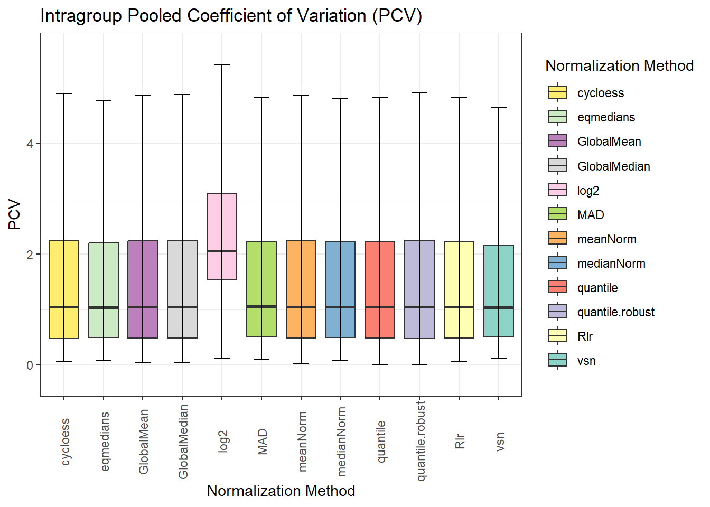
norm_metrics$pmad
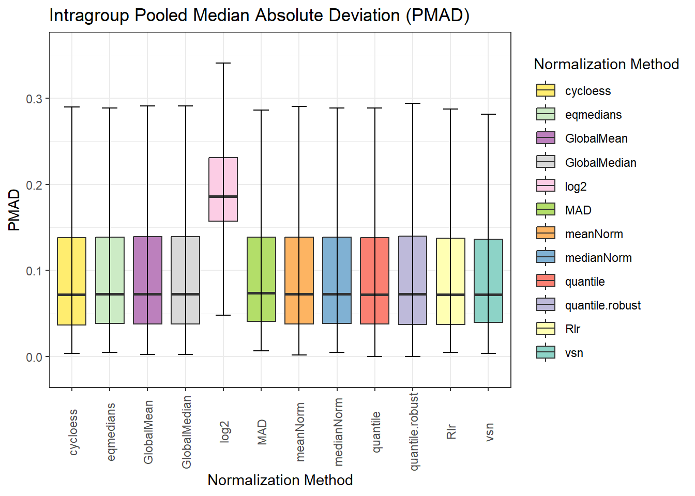
#norm_metrics$correlation
norm_metrics$final_ranking
Al igual que en la tabla, la gráfica muestra que para este caso, el mejor método de normalizacion es cycloess dado que es el que menor valor medio ha obtenido. A este le sigue vsn. Se pueden observar tres tendencias. En primer lugar, cycloess, vsn, Rlr y GLobalMean cuentan con una media cercana al 4. En el caso de los métodos GlobalMedian, meanNorm,eqmedians y quantile, el promedio se encuenta cercano al 6. Dado que contamos con 12 métricas, FIXME -> se encuentran en una poscion central, no son los más adecuados pero no son los peores. El método medianNorm tiene una valoración final de 7 indicando así que tampoco es un método adecuado a utilizar. Finalmente, los métodos quantile.robust, log2 y MAD tienen un promedio elevado que indica que utilizar dichos métodos de normalización no es optimo.
norm_metrics$pca
Con el análisis del PCA se busca analizar cuanta varianza se explica con menos componentes. El las diferentes gráficas se observa la varianza explicada con PC1 y PC2. En el caso de clycloess, el método obtenido como optimo para la normalizacion de este tipo de datos, el PC1 explica un 70.9% de la varianza del conjunto de proteinas.
Si se analizan la variabilidad explicada por el PC1 de las demás gráicas y se ordenan en función de ello, obtenemos un orden similar al obtenido en la tabla y en la gráfica. cycloess en todos los casos es el mejor método y log 2 el menos óptimo, no normalizar no genera beneficio.
norm_metrics$pc1_ranking
Debido a los valores métricos para los métodos de normalización, se optará por analizar cual es el mejor método de imputación de valores MAR para los tres métodos que, según la metríca utilizada, son los más apropiados. Así, se procederá a analizar las mejores métricas de imputaciones de valores MAR para cycloess, Rlr y vsn como métodos de normalización.
Selección del método de imputación de valores MAR
La imputación de datos es necesaria para evitar la pérdida de información y realizar un análisis estadístico más realista.
Dado que la deteccion de proteinas depende tanto de la muestra como de la sensibilidad del equipo de análisis, pueden aparecer datos como ausentes que realmente no lo son. Cuando esto ocurre, se dice que aparecen valores faltantes y se determinan como NA (En algunos casos, la máquina indica un valor cero que se controla en el paso de preprocesamiento de los datos crudos sustituyendo el cero por un NA).
Un valor puede ser ausente por dos motivos diferentes, aparecer a valores inferiores al límite de detección o por fallos de detección. Así, se determinan dos tipos de NAs: - MARs (Missing At Random): estos son los valores ausentes a causa de fallos en la detección. Un valor faltante en una replica de una condición en la que aparece en todas las réplicas menos una (umbral a determinar por el investigador) suele ser un valor ausente debido a un fallo en la detección. - MNAR (Missing Not At Random): valores ausentes debido a un nivel de abundancia muy bajo que es incapaz de detectar el equipo. Así, en este caso, no suelen aparecer valores de cuantificacion para ninguna de las replicas de una misma condición (pero si aparece en otras condiciones).
Dado que a naturaleza de los valores ausentes no siempre es la misma, el manejo e imputación de valores no conviene hacerla de la misma manera. Poder seleccionar el mejor método de imputación de datos para cada tipo de valor ausente, es el objetivo de dicho paquete.
Análisis de las métricas para selección del métodos de imputación
Al igual que en los métodos de normalización, los métodos de imputacion cuentan con unas métricas para su evaluación. Así, de la misma manera se rankean los diferentes métodos con valores del 1 al número de métodos evaluados y promedia la posición.
NO APARECEN: - with -> podria poner una media global para imputar? no tiene mucho sentido pero por ver lo que sale y comprobar que la puntuacion que sale es mala (o deberia serlo) - softhybrid -> - none -> no imputar no puede tener métrica de evaluacion
Table 3: Tabla de métricas de imputación de valores cuando la normalización se lleva a cabo mediante cycloess.
Método
NRMSE Rank
SOR Rank
PSS Rank
ACC OI Rank
Rank Mean
bpca
1
2
2
1
1.50
missForest
2
4
1
2
2.25
Impseq
3
3
4
3
3.25
Impseqrob
4
1
6
4
3.75
nbavg
6
5
3
6
5.00
mice
5
8
7
5
6.25
knn
8
6
5
8
6.75
limpa
7
7
8
7
7.25
MLE
9
9
9
9
9.00
PI
10
10
10
12
10.50
MinDet
11
11
13
11
11.50
QRILC
13
13
11
10
11.75
MinProb
12
12
12
13
12.25
zero
14
14
14
NA
14.00
min
15
15
15
NA
15.00
halfmin
16
16
16
NA
16.00
im_metr_cycloess$metrics
im_metr_cycloess$ranking
La imagen superior muestra que el mejor método de imputación de datos es Impseq, además de ser confirmado por tener el menor RankMean, en tres de las cuatro métricas tiene un valor de uno, es decir, tiene el valor más optimo de entre todos los métodos de imputación (Table 3).
QUe sea una muestra sintética hace que haya menos variabilidad biológica . El problema de estos datos es que cada réplica es igual, aunque se han procesado de maenra independiente, la muestra en si es igual.
Benchmarking para la selección del método de imputación de valores MNAR
Como se ha indicado anteriormente, la comparación estadística requiere los valores esperados de los cambios. Además, podemos proporcionar la naturaleza de cada proteina.
Valores esperados de la tasa de cambio
Se establecen los valores esperados de cambio en funcion de las proporciones de cada especie en cada muestra. Dado que no se podría calcular el cociente de 0, se ha establecido 1 como valor mínimo, de tal manera que las tasas de cambios esperadas en el caso de las comparaciones con la muestra D, no son completamente realistas.
expected_log2FC <-round(c(#B-Alog2(10/5),log2(10/15),#C-Alog2(15/5),log2(5/15), #D-Alog2(20/5),log2(1/15),#C-Blog2(15/10),log2(5/10),#D-Blog2(20/10),log2(1/10),#D-clog2(20/15), log2(1/5) ),2)expected_change <-data.frame(Comparison =rep(c("B-A", "C-A", "D-A", "C-B", "D-B", "D-C"), each =2),Species =rep(c("ECOLI", "YEAST"), times =6),expected_logFC = expected_log2FC)
Asociacion de proteinas a especies
La asociación de proteinas a especies permite ver como se distribuyen los resultados. Se espera que los verdaderos negativos pertenezcan a proteinas humanas mientras que los verdaderos positivos pertenezcan a proteinas de E. coli o S. cerevisiae
Dado que se trata de un ensayo donde conocemos las proteinas que deben aparecer, debemos cargar la tabla de datos que indica a que organismo pertenece cada protein group. Esta no debe tener grupos proteicos duplicados, en caso de que aparezcan, NADIA devuelve un mensaje indicando que hay duplicados. De esta manera, tambien se asegura que el número de DE no sea superior ( FIX ME: al ser JOIN imagino que haga el JOIN INTO DE table )
DUDA: si tengo un número de DE menor porque se hayan filtrado o no se hayan detectado ¿? Que pasa
Se establecen cycloess, vsn y Rlr como los métodos de normalizacion óptimos dados los resultados en el benchmarking de la propia normalización. Se va a mostrar el código para el análisis comparativo cuando la normalización se realiza con cycloess dadas las limitaciones de espacio. En el github se encuentran los archivos donde se ejecuta el código correspondiente a los métodos de normalización vsn y Rlr que darán lugar a las gráficas y resultados finales.
Dadas las diferentes combinaciones y el posible solapamiento entre nombres, como ocurre en el caso de la combinacion de métodos MAR y MNAR al seleccionar “combo” y “softHybrid” se genera una función que evita que se sobreescriban los datos.
Para llevar a cabo el evaluación de las diferentes combinaciones de métodos de normalización e imputación de los datos, se procesan los datos de manera iterativa y y se ejecuta el benchmarking individual para cada combinación. Durante el bucle, los resultados se almacenan en las listas inicializadas previamente, se les añade como identificador el nombre de la combinación y se combinan en un objeto unificado al final del bloque de código. Así, adaptamos la salida de la funcion de benchmarking unico a la entrada de la funcion de benchmarking multiple
Para llevar a cabo la evaluación de las diferentes combinaciones de métodos de normalización e imputación, se procesan los datos iterativamente y se ejecuta el benchmarking individual para cada escenario. Durante este bucle, se extraen los resultados específicos de cada ensayo —las métricas de OpDEA, los datos de confusión global, la tabla de métricas del benchmarking y el registro de clasificación—, se les añade un identificador con el nombre de la combinación y se almacenan en listas inicializadas de manera previa. Al finalizar todas las iteraciones, los elementos de cada lista se unifican verticalmente en dataframes consolidados, adaptando así la salida de la función de benchmarking único para que pueda ser utilizada directamente como entrada en la función de benchmarking múltiple.
#Lists to store benchmarking informationbm_cycloess_combs_imput_list <-list()OpDEA_cycloess_combs_imput_list <-list()confusion_cycloess_combs_imput_list <-list()classif_cycloess_combs_imput_list <-list()for (comb in combinations_cycloess_combs_imput){ name <-making_names(comb)# Processing data pp_result <-process_proteomics(preproc_data_spikein,norm_method = comb$norm_meth,imp_method = comb$imp_meth,mar_method = comb$mar_meth,mnar_method = comb$mnar_meth,de_method = comb$de_method,verbose =FALSE)# Individual benchmarking bm_result <-benchmarking_proteomics(pp_result$DEPs_results,expected_values = expected_change,species_df = species_pg_df, output_dir ="./bm_cycloess_combs_imput/bm_cycloess_combs_single",verbose =FALSE)#Saving data for each benchmarking## OpDEA metrics OpDEA <- bm_result$opdea_metrics OpDEA$Assay <- name OpDEA_cycloess_combs_imput_list[[name]] <- OpDEA## Confusion data confusion <- bm_result$confusion_overall confusion$Assay <- name confusion_cycloess_combs_imput_list[[name]] <- confusion## Benchmarking metrics table bm_w_imput <- bm_result$metrics_table bm_w_imput$Assay <- name bm_cycloess_combs_imput_list[[name]] <- bm_w_imput## Classification TP, TN, FP or FN classif <- bm_result$classified_df classif$Assay <- name classif_cycloess_combs_imput_list[[name]] <- classif}all_OpDEA_cycloess_combs_imput <-do.call(rbind, OpDEA_cycloess_combs_imput_list)all_confusion_cycloess_combs_imput <-do.call(rbind, confusion_cycloess_combs_imput_list)all_metrics_bm_cycloess_combs_imput <-do.call(rbind, bm_cycloess_combs_imput_list)all_classif_cycloess_combs_imput <-do.call(rbind, classif_cycloess_combs_imput_list)
Benchmarking multiple
Con los objetos creados anteriormente, podemos utilizar la función del benchmarking multiple.
Según el gráfico de barras generado en base a las métricas OpDEA (Figure 1 (a)), al igual que el gráfico de las métricas de NAguideR (Figure 1 (b)), el mejor método de imputación de valores MNAR cuando los valores son imputados con el método cycloess y los valores MAR se imputan mediante Impseq, parecen ser zero y min.
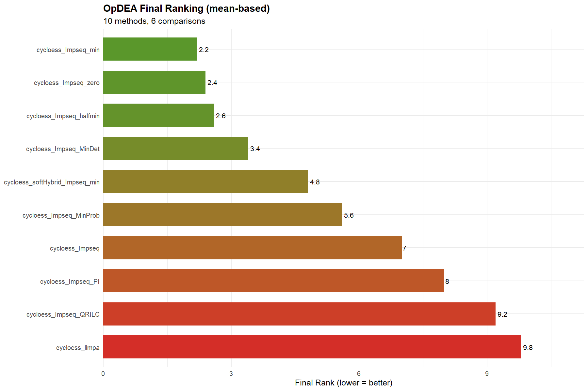
(a) Gráfico de barras de las métricas OpDEA
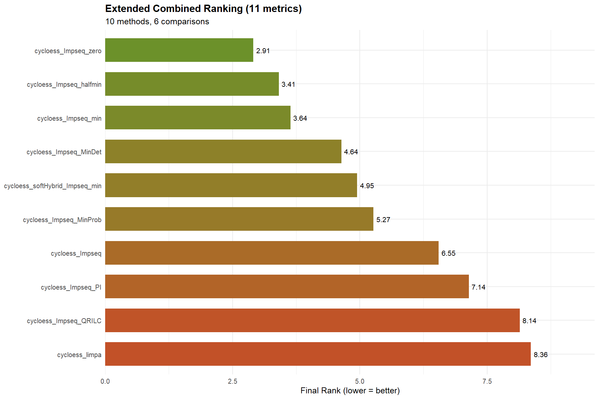
(b) Gráfico de barras de las métricas
Figure 1: Gráficos de comparación de métodos de imputación de valores combinados en función de diferentes métricas.
Las curvas ROC para cada comparación (Figure 2) corroboran que la combinación del método Impseq junto al zero son los que devuelven menor número de falsos positivos tras la imputación de valores. A pesar de que esta combinación no se muestre siempre en las primeras posiciones, tiende a obtener valores altos de pAUC cercanos a los de las posiciones iniciales en la mayoria de los casos.
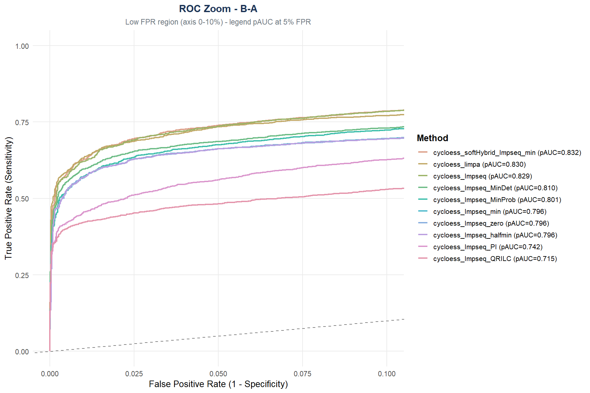
(a) Comparación B frente a A
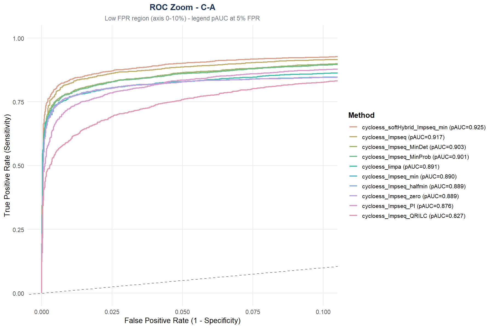
(b) Comparación C frente a A
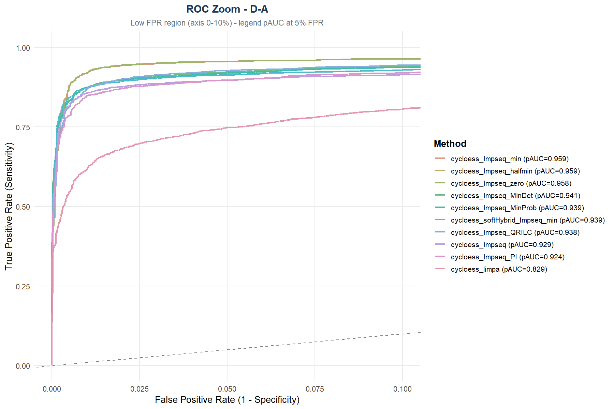
(c) Comparación D frente a A
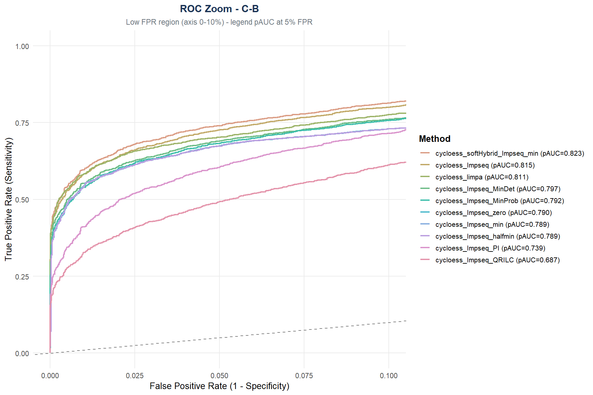
(d) Comparación C frente a B
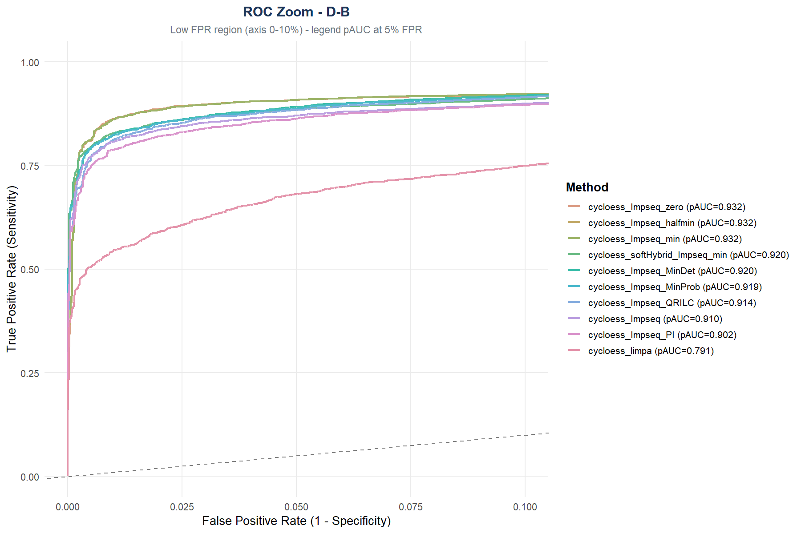
(e) Comparación D frente a B
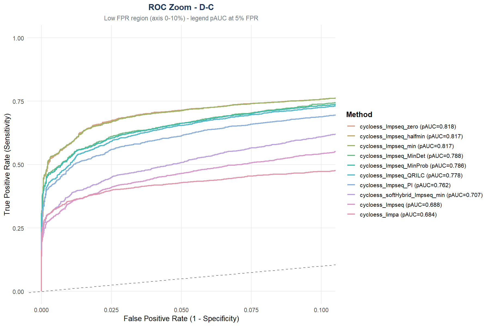
(f) Comparación D frente a C
Figure 2: Representación de las curvas ROC para las seis comparaciones realizadas entre los distintos grupos experimentales.
El método de imputación Impseq para los valores ausentes aleatorios combinado con el método de imputacion zero para valores ausentes no aleatorios toma posiciones altas. Como se observa en la Figure 3 donde el método de imputacion de valores MNAR zero es el que menor falsos positivos y falsos negativos devuelve de manera general. Además, se observa que el método de imputación limpa, tiende a generar un alto número de falsos negativos.
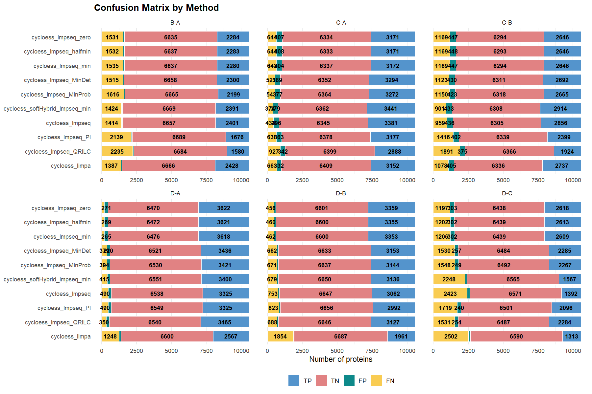
Figure 3: Matriz de confusión para las diferentes combinaciones.
QUe sea una muestra sintética hace que haya menos variabilidad biológica . El problema de estos datos es que cada réplica es igual, aunque se han procesado de manera independiente, la muestra en si es igual.
Análisis comparativo final entre los métodos de normalización seleccionadas
Finalmente, dado se han seleccionado los métodos zero y min como los más adecuados para imputar valores MNAR. Se mostrará el procedimiento y código del análisis comparativo cuando los valores MNAR se imputan con zero. Para concluir y ver el efecto del método de imputacion MNAR real, se van a mostrar los resultados cuando el método min es el seleccionado. El código se puede ver en GitHub.
Imputaciones a testar
Dado que se habian establecido cycloess, vsn y Rlr como los métodos mas apropiados para la normalización de datos, se ha analizado de manera paralela el método más óptimo para la imputación de datos. De manera independiente pero coincidente, se observó que el mejor método para imputar valores MAR es Impseq y el mejor método para imputar valores MNAR es zero. Así, se ha llegado a la comparación final donde se va a tratar de ver si hay alguna discrepancia entre el uso de los diferentes métodos de normalización.
Según la gráfica superior, donde se muestra la posición según las métricas OpDEA, al igual que en la Figure 4, el mejor método de imputación de valores cuando la normalización se realiza mediante final, es la combinación de Impseq y zero. El método Impseq se usa para imputar valores en los valores ausentes aleatorios mientras que el método min se utiliza en los valores ausentes no aleatorios.
FIX
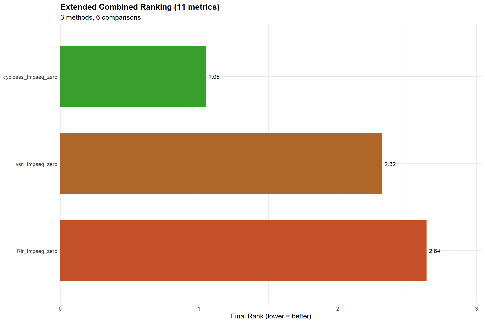
Figure 4: Gráfico de barras de las métricas
bm_multi_results_final_zero$gg_roc_zoom_by_comp
$`B-A`
$`C-A`
$`D-A`
$`C-B`
$`D-B`
$`D-C`
El método de imputación Impseq para los valores ausentes aleatorios combinado con el método de imputacion zero para valores ausentes no aleatorios tambien toma posiciones altas cuando la diferencia entre muestras es más notoria. Especialmente, cuando la muestra D no se está comparando. Esto indica que la combinación del método Impseq y zero, no es tan capaz de controlar los falsos negativos como la combinación del método Impseq junto con min o halfmin. Esto se puede observar en los gráficos siguientes.
FIX ME QUITAR: Que sea una muestra sintética hace que haya menos variabilidad biológica . El problema de estos datos es que cada réplica es igual, aunque se han procesado de maenra independiente, la muestra en si es igual.
Adjuntando el paquete: 'dplyr'
The following objects are masked from 'package:stats':
filter, lag
The following objects are masked from 'package:base':
intersect, setdiff, setequal, union
Con el objetivo de probar la herramienta, entender su funcionamiento y la ¿?utilidad¿? de realizar un benchmarking con proteinas Spike-In, se ha generado un conjunto de datos *** como se ha explicado en la metodología.
Para ello, se ha llevado a cabo el análisis de las métricas de normalización a traves de las tablas y gráficos que se generan, entendiendo que indica cada métrica y su aplicación.
Análisis de los grupos proteicos expresados diferencialmente
Tras la exportación de los grupos proteicos diferenciales, se ha generado un diagrama de Venn (Figure 5 (a)) donde se observa que, el 65.07% de las proteinas diferenciales exportadas es común e independiente al método de normalización de los datos.
El solapamiento es mayor cuando las proteinas exportadas son las obtenidas tras normalizar por Rlr y vsn. Esto se debe a que el método cycloess devuelve un número de falsos positivos menor que los métodos Rlr y vsn. Por ello, la confianza en que de esos 4386 grupos proteicos detectados como diferenciales, es superior a la confianza sobre los 1271 grupos proteicos comunes entre los diferenciales obtenidos tras la normalización con Rlr y vsn.
El diagrama de Venn, de manera independiente podría sugerir que el numero de proteinas rescatadas como diferenciales es menor pero lo que ocurre realmente es que los métodos de normalización Rlr y vsn devuelven un número de falsos positivos mayor como se comprueba en el gráfico de barras (Figure 5 (b)).
Lo mismo ocurre cuando la imputacion de valores ausentes no aleatorios se realiza con el método zero (Figure 5 (c)), la especificidad del método cycloess es superior a la de los métodos de normalizacion vsn y Rlr. Así, el círculo correspondiente a las proteinas diferenciales obtenidas mediante la normalización con el método cycloess tiene un diametro menor que el correspondiente a las proteinas obtenidas mediante la normalización con vsn y Rlr.
De la misma manera, esto se ve reforzado por los gráficos de barras (Figure 5 (d)) para las diferentes comparaciones donde se ve que el número de falsos positivos es superior al normalizar los valores mediante vsn o Rlr.
(a)
(b)
(c)
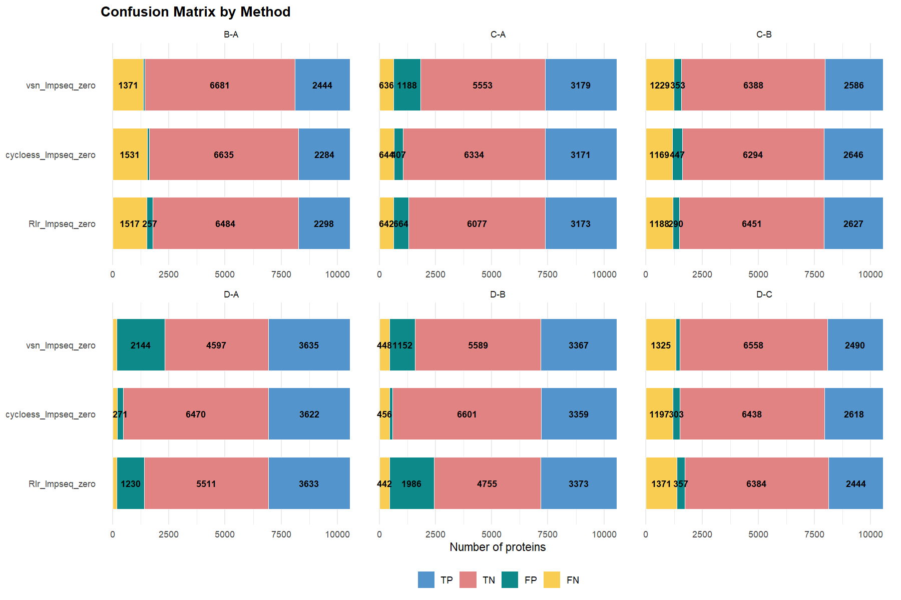
(d)
Figure 5: Gráficos comparativos del efecto del uso de diferentes métodos de normalización e imputación de valores para un mismo conjunto de datos.. A. Diagrama de Venn de las proteinas diferencialmente expresadas de manera significativa entre los diferentes métodos de normalización y la posterior imputación consistente y uniforme usando el método de imputacion Impseq para valores MAR y el método min para valores MNAR. Los diferentes colores corresponden a los diferentes métodos de normalizacion. B. Gráfico de barras comparativo entre las diferentes condicinoes experimentales egún el método de normalizacin aplicado. La estrategia de imputacion se ha mantenido constante de acuerdo con los resultados del banchmarking realizado, utilizando el método de imputacion Impseq para valores MAR y el método min para valores MNAR. C. Diagrama de Venn de las proteinas diferencialmente expresadas de manera significativa entre los diferentes métodos de normalización y la posterior imputación consistente y uniforme usando el método de imputacion Impseq para valores MAR y el método zero para valores MNAR. D. Gráfico de barras comparativo entre las diferentes condicinoes experimentales egún el método de normalizacin aplicado. La estrategia de imputacion se ha mantenido constante de acuerdo con los resultados del banchmarking realizado, utilizando el método de imputacion Impseq para valores MAR y el método zero para valores MNAR.
Con el objetivo de obtener un menor número de menor de falsos positivos, se analiza que valor de logFC es el permite obtener un alto número de verdaderos positivos evitando los falsos positivos. Así, en la Figure 6 (a) se observa que un |logFC| > 0.2 mantiene un alto número de verdaderos positivos y disminuyendo drasticamente el número de falsos positivos. Cuando la imputación de valores MNAR se realiza mediante el método min (Figure 6 (b)), este mismo valor de logFC absoluto es el que permite rescatar un mayor número de proteinas que realmente cambian.
Esto se debe a que, sin filtrar según el Fold-Change, un alto número de las proteinas que obtienen un p-valor ajustado menor que 0.05 tienen una tasa de cambio muy pequeña ya que realmente no hay cambio.
(a) Valores MNAR imputados mediante zero
(b) Valores MNAR imputados mediante min
Figure 6: Tabla de cuantificación de verdaderos positivos, verdaderos negativos, falsos positivos y falsos negativos.
Al extraer las proteinas con un |logFC| > 0.2 y un p-valor ajustado < 0.05, se obtiene que el porcentaje de proteinas compartidas entre los diferentes métodos de normalización de los datos es superior, alcanzando el 78% de proteinas comunes para ambos métodos de imputación de valores MNAR (Figure 7). Así, se puede observar que el diagrama muestra círculos más concentricos y un menor número de proteinas compartidas entre las rescatadas de la imputación con Rlr y vsn. Esto indica que el número de falsos positivos que se generaban con los métodos Rlr y vsn que estos compartian (18%) se ven filtrados por la tasa de cambio.
(a) VennDiagram zero logFC
(b) VennDiagram min logFC
Figure 7: Diagramas de Venn para las proteinas diferencialmente expresadas con un valor de logaritmo en base dos una tasa de cambio superior al 0.2 e inferior al 0.2
Pattern profiler
Se obtiene el pattern profiler para el conjunto de proteinas diferenciales obtenidas mediante normalización por cycloess, ya que es el método que posteriormente devuelve menos falsos positivos. El método de imputación de valores ausentes MAR será Impseq y el de MNAR es zero. Se ha ecigido que el mínimo de pertenencia a un cluster debe ser superior a 0.7
Figure 8: Pattern profile de las proteinas expresadas de manera diferencial en las diferentes muestras
Al realizar el perfil de patrones que siguen las proteinas, la funcion pattern_profiler_analysis determina que el número de clusters óptimo es 3. Así, al analizar el cambio de manera conjunta (FIX ME se pueden observar mapas interactivos individuales en el repositorio) se ve que el cluster 1 está compuesto por proteinas con baja abundancia en la muestra A y va aumentando el valor de z-score hasta la muestra D. Este cluster podría estar altamente representado por proteinas pertenencientes a E.coli dada la naturaleza de preparación de la muestra. Para el cluster 2, la tendencia es diferente y poco intuitiva ya que, la tasa de cambio se mantiene constante entre las muestras A y B, cae para la muestra C y de nuevo el z-score aumenta en la muestra D. Finalmente, el cluster 3 podría ser el que contenga las proteinas correspondientes a la levadura ya que, de manera progresiva, el valor de z-score disminuye.
Este gráfico permite analizar como cambian las proteinas a diferentes tiempos o entre diferentes condiciones, permitiendo seleccionar proteinas que siguen una misma tendencia y pueden estar relacionadas.
Discusión y Conclusiones.
La veracidad de los resultados depende de los métodos de normalización e imputación seleccionados. Evaluar la capacidad de los diferentes métodos de devolver el mayor número de verdaderos positivos y el menor número de falsos positivos, es crucial para la posterior interpretación funcional. Se ha observado que la selección de un método u otro puede suponer una diferencia en el resultado que se obtiene, dando lugar a una interpretación funcional errónea. Por ello, es conveniente analizar como de relevantes son las proteínas diferenciales para cada condición mediante un diagrama de Venn que demuestre que aquellas proteínas encontradas como diferenciales, realmente son relevantes biológicamente y no son artefactos causados por la manipulación de los datos.
Por otro lado, se ha observado que establecer un filtro de logFC dependiente del conjunto de datos empleado es crucial. Esto permite eliminar un alto número de falsos positivos manteniendo los grupos proteicos que se expresan de manera diferencial de manera real.
Si bien esto no es posible cuando los datos a analizar son reales, dado que no contamos con proteínas spike-in, tras analizar diferentes conjuntos de datos, se puede ir conociendo que método de normalización o imputación podría ser más adecuado para el análisis de datos reales. Como, por ejemplo, se ha observado que, en ambos casos, el método cycloess tiende a devolver un bajo número de falsos positivos.